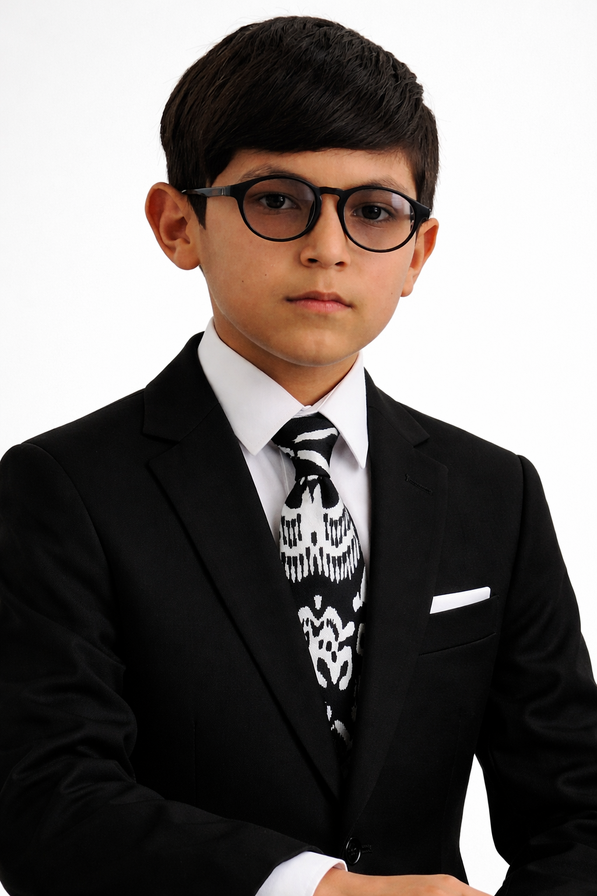
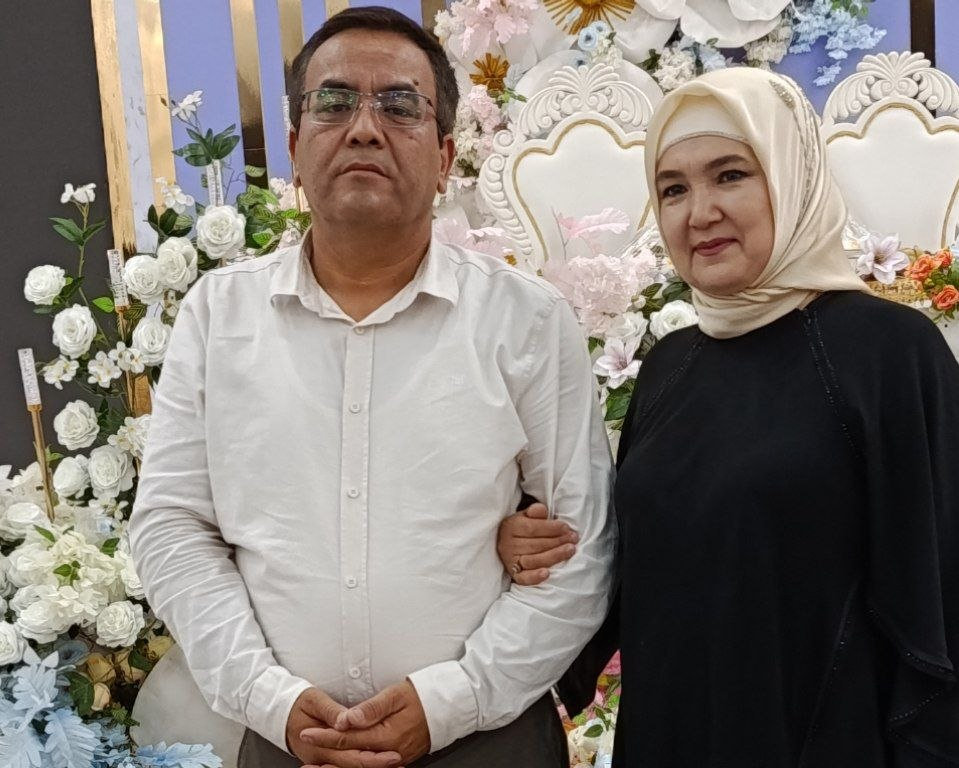
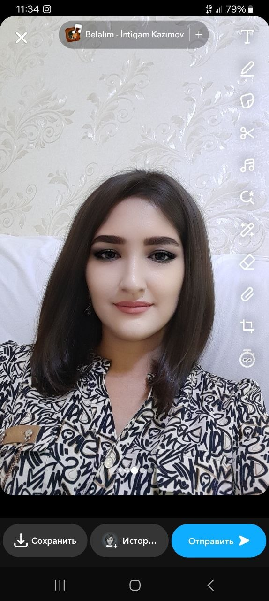
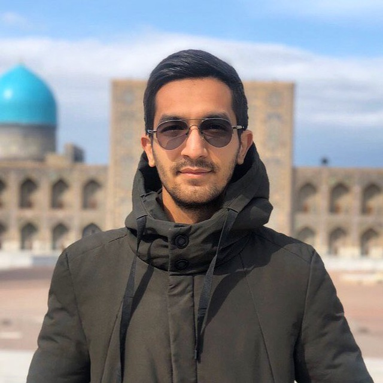
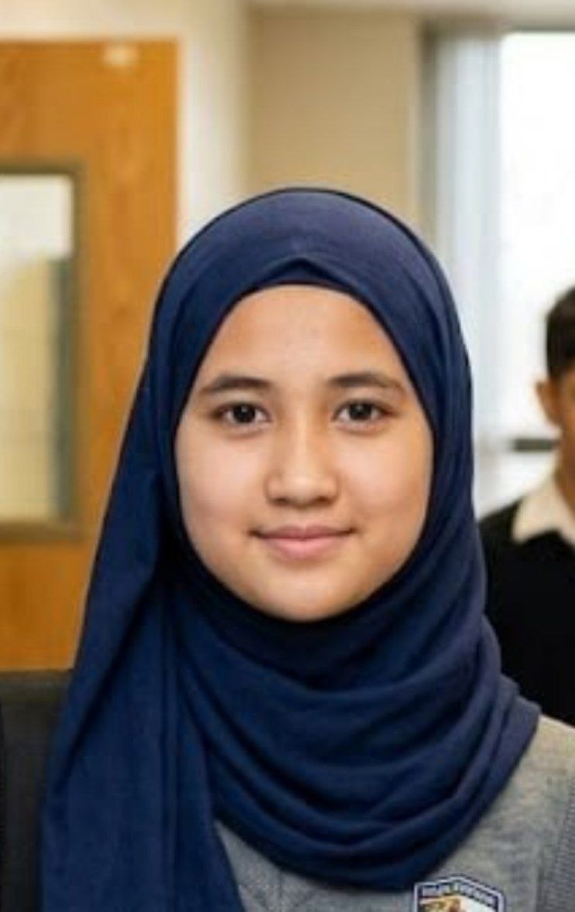

Assalomu alaykum meni ismim
Kamronbek
Men zamonaviy va interaktiv veb-saytlar yaratuvchi Frontend dasturchiman. Gʻoyalarni toza kod va mukammal dizayn orqali hayotga tatbiq etaman."
"Salom, men Frontend dasturchiman. Men gʻoyalarni toza kod, zamonaviy dizayn va mukammal foydalanuvchi interfeysi orqali
interaktiv raqamli reallikka aylantiraman. Har bir piksellar ketma-ketligi va kod qatori ortida foydalanuvchiga boʻlgan eʼtibor yotadi."

Men haqimda
Hozirda zamonaviy veb-texnologiyalarni chuqur oʻzlashtirayotgan Frontend dasturchiman. Murakkab setkalarni mukammal qurish, VS Code-da ishni optimallashtirish va har bir loyihani toza kod bilan 'pixel-perfect' holatiga keltirish — mening kundalik ishim va ishtiyoqimdir.
VS Code-da ishimni optimallashtirishga va har bir loyihani
pixel-perfect holatiga
keltirishga
intilaman.
Kod yozishda men uchun eng muhimi
tozalik, tartib va har bir detalga eʼtibor berishdir.
Meni Ko'nikmalarim
HTML 5
Veb-sahifalarning "skeleti" va strukturasini yaratish. Toza, zamonaviy va mukammal (pixel-perfect) loyihalar uchun barcha turdagi semantik teglardan (header, section, article) unumli foydalanish.
CSS
Veb-saytlarga jon bag‘ishlash: murakkab 3D va 2D transformatsiyalar, animatsiyalar, moslashuvchan dizayn (Media Queries) va toza, strukturani buzmaydigan stillar yozish.
JAVASCRIPT
Sayt interaktivligi va funksionalligini ta'minlash. Hodisalarni (events) boshqarish, dinamik elementlar yaratish va toza, tushunarli JS kod yozish ko‘nikmasi.
Mening Oila A'zolarim

Dadam Va Onam
Oilamiz juftligi
Bizning eng katta suyanchig'imiz, har bir ishimizda bizga to'g'ri yo'l ko'rsatuvchi maslahatguyimiz, shirindan shirin taomlar tayyorlab beradigan farishtamiz onamiz va oila boshlig'i dadamiz bu dunyodagi eng mehribon inson onam va eng kuchli inson dadam

Opam (32 yosh)
Xonadonimiz fayzi
Hayotiy tajribaga ega, oilamizning samimiy va mehribon ustuni. Bizga har doim toʻgʻri yoʻl koʻrsatib, gʻamxoʻrlik qiladi. Ismlari Dilafruz xozirda dorixonada sotuvchi bo'lib ishlaydilar va 1994-yil 27-martida tavvallud topganlar.

Akam (30 yosh)
Oila suyanchi
Hayotda oʻz oʻrniga ega, har qanday vaziyatda bizni qoʻllab-quvvatlaydigan, shijoatli va masʼuliyatli inson.Ismlari Begzod xozirda mashhur qo'shiqchi Xurshid Rasulovning musiqachi guruhida baraban chaladilar va 1996-yilning 1-iyunida tavvallud topganlar.

Ikkinchi Opam (17 yosh)
Oila quvonchi
Hozirda tahsil olmoqda. Kelajakka intiluvchan, rasm chizishga, kitob oʻqishga va bilim olishga juda qiziquvchan.Ismlari Saida oilamizda shirinliklar tayyorlaydigan chiroyli opam 2009-yilning 11-mayida tavvallud topganlar